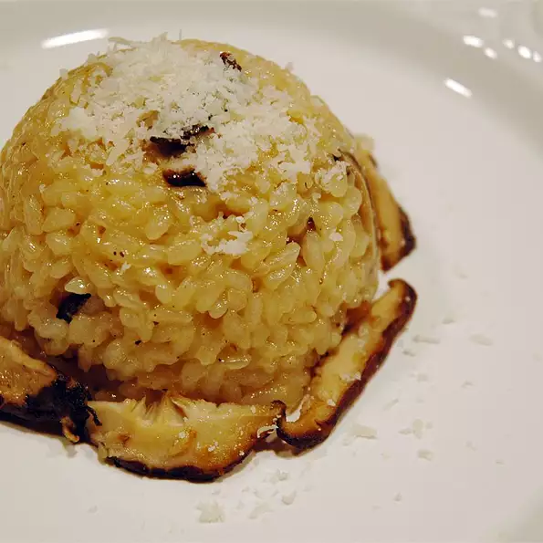

Risotto

Description
Savory and cheesy chanterelle risotto. This is a sublime vegetarian dish for dinner parties. You can substitute Romano for Parmesan cheese and porcinis for chanterelles.
Ingredients (6 servings)
- 2 tablespoons butter
- 2 cloves chopped fresh garlic
- 2 cups sliced chanterelle mushrooms
- 2 tablespoons butter
- 2 cups Arborio rice
- 5 cups vegetable broth
- 2 cups freshly grated Parmesan cheese
- salt and ground black pepper to taste
Steps
- Melt 2 tablespoons butter in a large skillet over medium-high heat. Cook and stir garlic and mushrooms in melted butter until mushrooms are slightly browned, about 3 minutes. Set aside.
- Melt 2 tablespoons butter in a large saucepan over medium heat. Stir in rice; cook for 1 to 2 minutes. Slowly add vegetable broth 1/2 cup at a time, stirring frequently and allowing liquid to be absorbed completely before adding more broth. Continue cooking until rice is tender to the tooth.
- Stir in mushroom mixture and cook until heated through, about 1 minute. Stir in Parmesan cheese; season with salt and pepper.